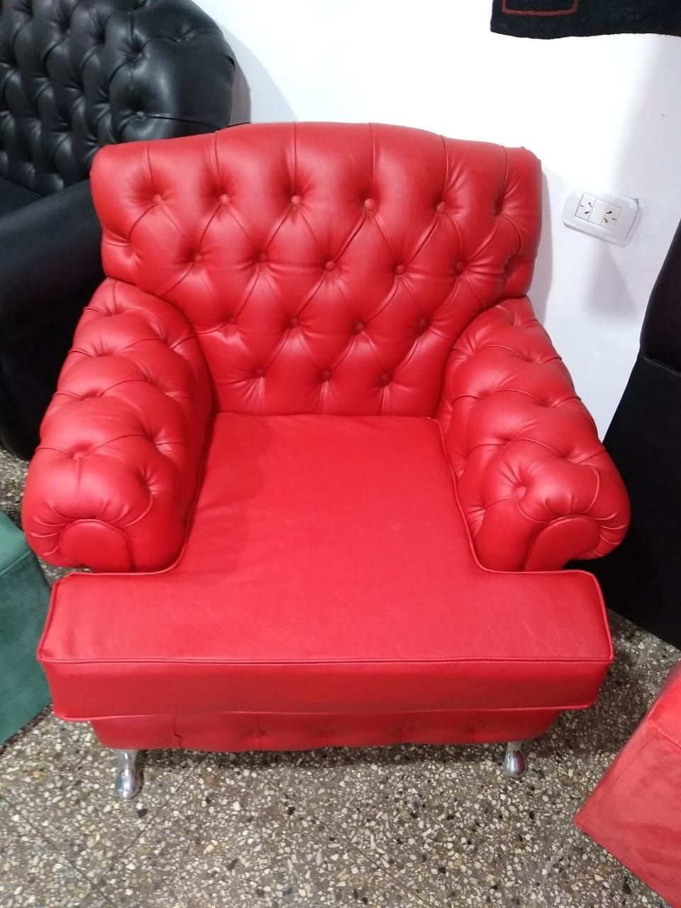
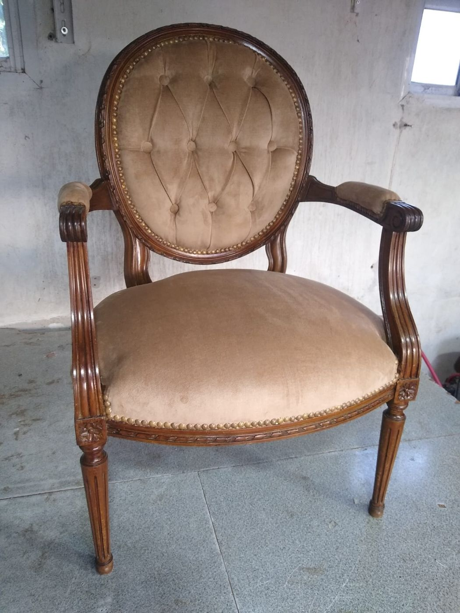
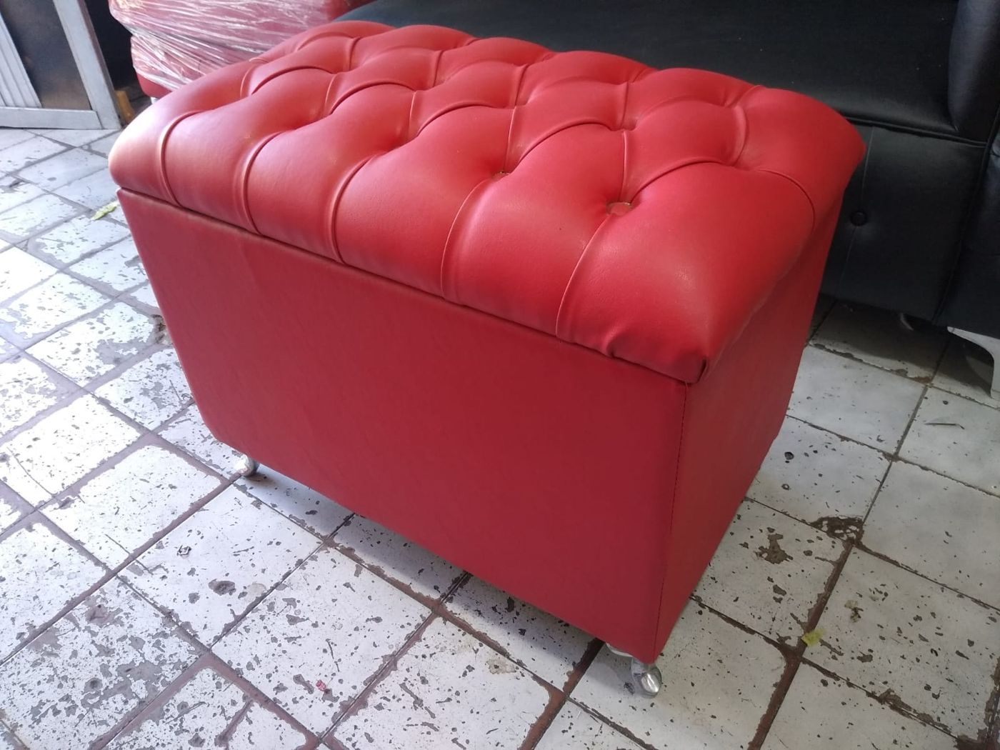

Conservás la estructura
Los muebles de antes tienen madera y armazón de calidad. Los revisamos, reforzamos y renovamos lo que se gastó.
Retapizado de muebles y automotor
Tu sillón, tus sillas o los asientos de tu auto ya tienen lo más valioso: la estructura. Le damos una vida nueva con telas, cuerinas y panas a elección, sin que tengas que comprar todo de nuevo.


Antes de comprar uno nuevo
La tela se gasta, la goma se aplasta, el color pasa de moda. Pero la estructura sigue firme. Retapizar es la forma más inteligente de renovar tu casa o tu auto.
Los muebles de antes tienen madera y armazón de calidad. Los revisamos, reforzamos y renovamos lo que se gastó.
Cambiás tela, goma y terminación. Sin pagar de nuevo por un mueble entero.
Elegís tela, color y terminación: lisa, capitoné o entachada. Algo que no vas a encontrar en una góndola.
Un mueble retapizado es uno menos en la basura y uno nuevo menos que fabricar.
Qué podemos renovar
Trabajamos sobre tus muebles y tapizados para que vuelvan a acompañarte por muchos años.
Renová tus muebles favoritos, conservando su estructura y eligiendo materiales y colores.
Asientos gastados, rotos o hundidos no son motivo para cambiar de auto ni comprar fundas que no calzan. Los retapizamos a medida.
Trabajos del taller
Fotos reales de muebles que pasaron por nuestro taller de Lomas de Zamora.

Cómo trabajamos
Por WhatsApp, del mueble o del asiento que querés renovar, con sus medidas aproximadas.
Te asesoramos sobre telas, cuerinas y terminaciones, y te damos el precio actualizado.
Revisamos y reforzamos la estructura, cambiamos la goma por una de alta densidad y tapizamos.
Retirás tu mueble listo para muchos años más de uso.
Puffs, sillas materas, sillones, respaldos de sommier (1,40 y 1,60), bauleras pie de cama y almohadones de 38 × 38. Entrega inmediata en productos ya fabricados y unos diez días hábiles para fabricación.
Contacto
Mandanos una foto por WhatsApp y te asesoramos sin compromiso.
☏ Escribinos por WhatsApp